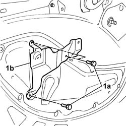
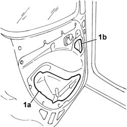
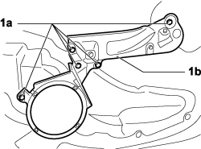

7005A04 front side door water guard protection - r r or replace with door panel removed
- Path
- Procedures > 70 FITTINGS > 7005 PASSENGER COMPARTMENT FRONT SIDE DOORS > 7005A front side door assembly > 7005A04 front side door water guard protection - r r or replace with door panel removed
- Kind
- repair procedure (removal / refitting; the operation number is the code)
- Applies to
- all engines; all production periods
- Interactive page
- https://sloeber94.github.io/elrnDB-fDbl/en/#/2584982
Applies to: engines: 1.2 8v, 1.6 16v, 1.3 JTD 16V, 1.9 JTD 8V, 1.9 DIESEL; all production periods
 Removing
Removing
 Refitting
Refitting1. Undo the bolts (1a) and remove the panel mounting bracket (1b).

Applies to: engines: 1.2 8v, 1.6 16v, 1.3 JTD 16V, 1.9 JTD 8V, 1.9 DIESEL; all production periods
1. Remove the central (1a) and top (1b) water seal.

Applies to: engines: 1.2 8v, 1.6 16v, 1.3 JTD 16V, 1.9 JTD 8V, 1.9 DIESEL; all production periods
Refitting
RemovingCheck that the new seals are intact and not torn.
Fit the new central seal, making sure that the adhesive bead sticks to the door frame.
Repeat the operation for the top seal.
Fit the handle mounting bracket and secure it with the nuts.
Applies to: engines: 1.4 8v, 1.6 16v, 1.3 JTD 16V, 1.9 JTD 8V; production: da 12/03; only with equipment: MY 2005
Removing
Refitting- Turn the ignition key to the OFF position.
- Lift the bonnet
- Disconnect the negative battery terminal.
Description | Connector | |
|---|---|---|
BATTERY |
Op. 5570T91 FRONT SIDE SPEAKER (ONE), LEFT OR RIGHT - R.R. WITH DOOR PANEL REMOVED
1. Undo the nuts (1a) securing the reinforcement bracket (1b) for the handle and removethe latter from the vehicle.

Applies to: engines: 1.4 8v, 1.6 16v, 1.3 JTD 16V, 1.9 JTD 8V; production: da 12/03; only with equipment: MY 2005
1. Remove the centre (1a) and upper (1b) protective water shield.
Applies to: engines: 1.4 8v, 1.6 16v, 1.3 JTD 16V, 1.9 JTD 8V; production: da 12/03; only with equipment: MY 2005
Refitting
Removing- Check that the new protection is intact and not torn.
- Position the new centre water shield protection, taking care to ensure that the adhesive sticks to the door frame.
- Repeat the operation for the upper protection.
- Place the handle reinforcement bracket in position and tighten the fixing nuts.
Op. 5570T91 FRONT SIDE SPEAKER (ONE), LEFT OR RIGHT - R.R. WITH DOOR PANEL REMOVED
- Connect the negative battery terminal.
Description | Connector | |
|---|---|---|
BATTERY |
Topics linked from this page (2)
Topics that link to this page (8)
- 7005A05 front side door water guard protection r r or arrange
- 7005D14 front side door descending window glass - r r with door panel (and mount frame) removed
- 7005D15 front side door descending window glass r r
- 7005D22 front side door descending window glass guide (one) - r r with door panel (and support frame) removed
- 7005D23 front side door descending window glass guide one r r
- 7005D34 front side door manual window mechanism - r r with door panel and mount frame removed
- 7005D35 front side door manual window glass r r
- 7005M21 front side door electrically operated window - r r